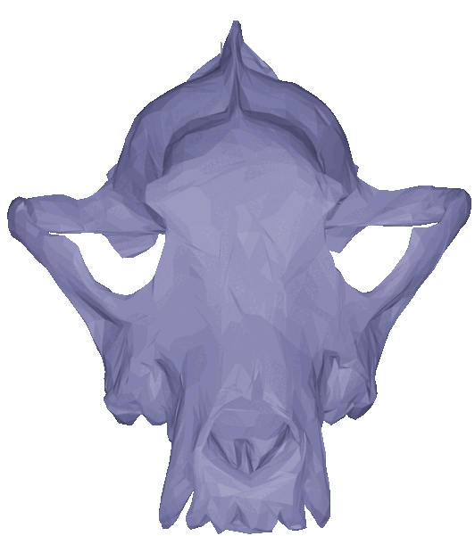

|
Reasearch Interests:
My research interests are in differential geometry, discrete geometry, shape analysis, functional data analysis, machine learning, optimization, and optimal transport. See a list of some projects with descriptions below: |
 |
Papers
Luis F. Pereira, Alice Le Brigant, Adele Myers, Emmanuel Hartman, Amil Khan, Malik Tuerkoen, Trey Dold, Mengyang Gu, Pablo Suarez-Serrato, and Nina Miolane. Learning from landmarks, curves, surfaces, and shapes in Geomstats Transactions on Mathematical Software (Forthcoming)
Preprint available here: https://arxiv.org/abs/2406.10437v1
Jonathan Cerqueira, Emmanuel Hartman, Eric Klassen, and Martin Bauer. Sobolev Metrics on Spaces of Discrete Regular Curves Discrete and Continuous Dynamical Systems (DCDS)
Preprint available here: https://arxiv.org/abs/2409.02351
Emmanuel Hartman, Emery Pierson, Martin Bauer, Nicolas Charon, Mohamed Daoudi. Basis Restricted Elastic Shape Analysis on the Space of Unregistered Surfaces International Journal of Computer Vision
Preprint available here: https://arxiv.org/abs/2311.04382
Emmanuel Hartman Methods of Shape Analysis: Optimal Transport, Geometric Measure Theory, and Deep Learning Dissertation at Florida State University (2024)
Preprint available upon request.
Emmanuel Hartman, Emery Pierson. VariGrad: A Novel Feature Vector Architecture for Geometric Deep Learning on Unregistered Data In Eurographics Workshop on 3D Object Retrieval(2023)
Preprint available here: https://arxiv.org/abs/2307.03553
Emmanuel Hartman, Martin Bauer, Eric Klassen. Square Root Normal Fields for Lipschitz surfaces and the Wasserstein Fisher Rao metric SIAM Mathematical Analysis (2024)
Preprint available here: https://arxiv.org/abs/2301.00284
Emmanuel Hartman, Emery Pierson, Martin Bauer, Nicolas Charon, Mohamed Daoudi. BaRe-ESA: A Riemannian Framework for Unregistered Human Body Shapes In Proceedings of the IEEE/CVF International Conference on Computer Vision (ICCV) (2023)
Preprint available here: https://arxiv.org/abs/2211.13185
Emmanuel Hartman, Yashil Sukurdeep, Eric Klassen, Martin Bauer, Nicolas Charon. Elastic shape analysis of surfaces with second-order Sobolev metrics: a comprehensive numerical framework. International Journal of Computer Vision (2022)
Paper available here: https://link.springer.com/article/10.1007/s11263-022-01743-0
Martin Bauer, Emmanuel Hartman, Eric Klassen. The Square Root Normal Field Distance and Unbalanced Optimal Transport. Applied Mathematics and Optimization (2022)
Preprint available here: https://arxiv.org/abs/2105.06510
Emmanuel Hartman, Yashil Sukurdeep, Nicolas Charon, Eric Klassen, Martin Bauer. Supervised deep learning of elastic SRV distances on the shape space of curves. 2021 IEEE Conference on Computer Vision and Pattern Recognition Workshops (CVPRW) (2021)
Preprint available here: https://arxiv.org/abs/2101.04929
Preprints
Mary Chriselda Antony Oliver, Emmanuel Hartman, Tom Needham. Conic Formulations of Transport Metrics for Unbalanced Measure Networks and Hypernetworks
Preprint available here: https://arxiv.org/abs/2508.10888
Emmanuel Hartman and Nicholas Charon. SVarM: Linear Support Varifold Machines for Classification and Regression on Geometric Data
Preprint available here: https://arxiv.org/abs/2506.01189
Emmanuel Hartman, Martin Bauer, Nicolas Charon. Self Supervised Networks for Learning Latent Space Representations of Human Body Scans and Motions.
Preprint available here: https://arxiv.org/abs/2411.03475
Software Packages
Pytorch_VariGrad. Pytorch implementation of the VariGrad feature vector architecture proposed in VariGrad: A Novel Feature Vector Architecture for Geometric Deep Learning on Unregistered Data.
+Available on Github at https://github.com/emmanuel-hartman/Pytorch_VariGrad
BCMOUT-pytorch. An implementation of the block coordinate method introduced in The Square Root Normal Field Distance and Unbalanced Optimal Transport that operates on a larger set of manifolds and computes the Wasserstein-Fisher-Rao and Hellinger-Kantoriovich distances.
+Available on Github at https://github.com/emmanuel-hartman/BCMOUT-pytorch
H2_SurfaceMatch. A toolbox for the comparison, matching and interpolation of triangulated surfaces with respect to a second order Sobolev metric. Includes a comprehensive statistical pipeline that allows for the computation of the Karcher means, tangent space principal component analysis, and motion transfer in the space of parametrized surfaces and in shape space.
+Available on Github at https://github.com/emmanuel-hartman/H2_SurfaceMatch
WassersteinFisherRaoDistance. An optimization method for computing the unbalanced Wasserstein-Fisher-Rao optimal transport distance between two measures on S^2. Includes an application to computing the SRNF shape distance and color tranfer.
+Available on Github at https://github.com/emmanuel-hartman/WassersteinFisherRaoDistance
supervisedDL-SRVFdistances. An implementation of the framework introduced in Supervised deep learning of elastic SRV distances on the shape space of curves. (2021)
+Available on Github at https://github.com/emmanuel-hartman/supervisedDL-SRVFdistances